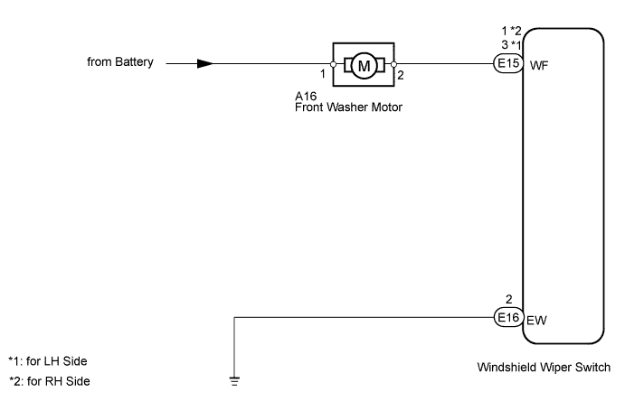
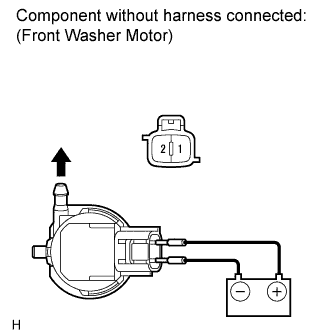
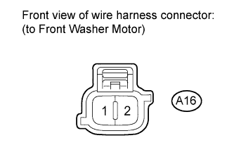
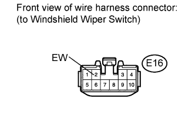
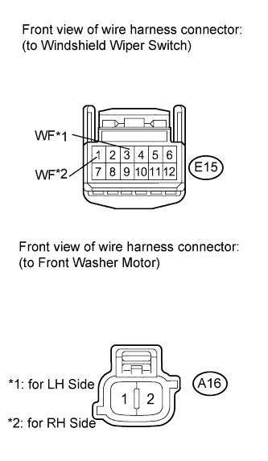

WIPER AND WASHER SYSTEM (w/ Rain Sensor) > Washer Motor Circuit |

| 1.INSPECT FRONT WASHER MOTOR |
 |
Remove the front washer motor (Click here).
Apply battery voltage to the windshield washer motor and check the operation of the windshield washer motor.
| Measurement Condition | Specified Condition |
| Battery positive (+) → Terminal 1 Battery negative (-) → Terminal 2 | Front washer motor operation is normal |
|
| ||||
| OK | |
| 2.CHECK HARNESS AND CONNECTOR (FRONT WASHER MOTOR - BODY GROUND) |
 |
Disconnect the A16 front washer motor connector.
Measure the voltage according to the value(s) in the table below.
| Tester Connection | Condition | Specified Condition |
| A16-1 - Body ground | Always | 11 to 14 V |
|
| ||||
| OK | |
| 3.CHECK HARNESS AND CONNECTOR (WINDSHIELD WIPER SWITCH - BODY GROUND) |
 |
Disconnect the E16 windshield wiper switch connector.
Measure the resistance according to the value(s) in the table below.
| Tester Connection | Condition | Specified Condition |
| E16-2 - Body ground | Always | Below 1 Ω |
|
| ||||
| OK | |
| 4.CHECK HARNESS AND CONNECTOR (FRONT WASHER MOTOR - WINDSHIELD WIPER SWITCH) |
 |
Disconnect the E15 windshield wiper switch connector.
Disconnect the A16 washer motor connector.
Measure the resistance according to the value(s) in the table below.
| Tester Connection | Condition | Specified Condition |
| A16-2 - E15-3 (WF) | Always | Below 1 Ω |
| A16-2 - Body ground | Always | 10 kΩ or higher |
| Tester Connection | Condition | Specified Condition |
| A16-2 - E15-1 (WF) | Always | Below 1 Ω |
| A16-2 - Body ground | Always | 10 kΩ or higher |
|
| ||||
| OK | ||
| ||